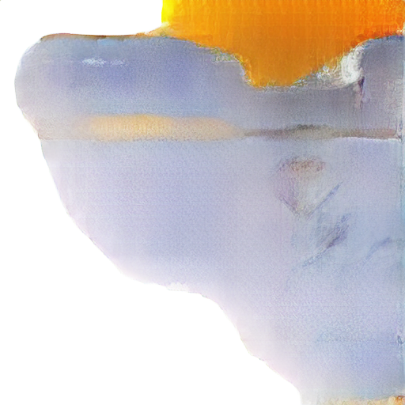
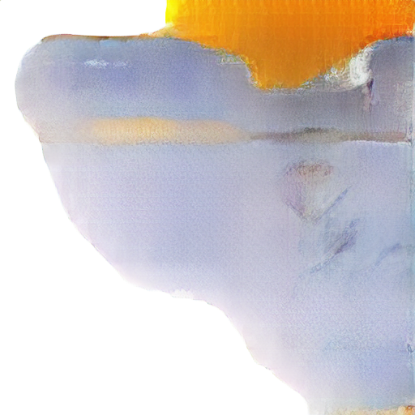

|
RESEARCH
The Social Dynamics and Well-Being (SocWeB) Lab at Georgia Tech, directed by Dr. Munmun De Choudhury, 2022
Objective: Predict worker's performance and stress level through the health data with Nokia Bell Lab.
Duty: Data analysis and machine learning predict.
Drew data standard distribution to observe and used algorithm provided by Nokia Bell Lab to assign data to four Quadrants;(High performance, High stress; High performance, Low
stress; Low performance, High stress; Low performance Low stress.)
Calculated the feature correlation through standard like p-value.
Implemented different ML ways to predict future stress and performance. Gain: In proess project
FashionDeepBlue China, directed by Yilu Zhou, Agnes Kubiak, 2019-Present
Dali Brush:
To customize the personalized clothes for the clients (blend the user-supplied elements with a stylish texture to create a new printing)
Train model to determine the product (texture) is now in its infancy, fashion, or decay.
. Labeling System:
Users of system can tag pictures according to the requirements of designer Agnes.
The Color AI Lab at Fordham University, directed by Yilu ZHOU, 2018
Objective: To accomplish the massive show field pictures processing, get the main color of clothing, the future trend of color, and color matching
Duty: Mainly took charge of image processing, human recognition, portrait gouging, color clustering algorithm, and skin color removal algorithm.
Removed the background: HumanBody Segment; get a mask; superimpose the original picture and the mask; cut out the human body, turned all pixels of the background black;
Used Kmeans++ to get the color clustering; selected the top six ones of the largest color areas;
Removed skin color based on YCrCb color space. Gain: results released in trend analysis report of 2018 Shanghai fashion week
[my related part in this report]
(Xinhua News Agency & FASHIONDEEPBLUE)
AA Algorithm Accelerates Neural Network, directed by Yajun HA, 06-08/2018
AFFINE ARITHMETIC: examined the influence of noise on the output results of neural network by adding noise to the weight, to determine whether this weight is important; cut off the excess weights to make the network lighter
Duty: Set up Alex Net; processed experimental results and draw charts
|

 
